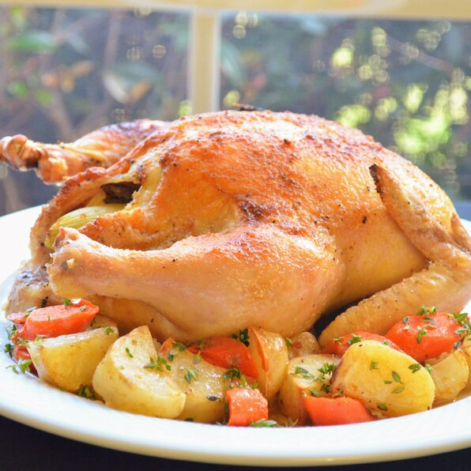

Juicy Roasted Chicken Recipe

Description
This Juicy Roasted Chicken Recipe is found on allrecipes website
It is a recipe provided by Robin Rockingbird.
It is a German recipe to make the most juicy roasted chicken ever made before!
Ingredients
- 1 (3 pound) whole chicken, giblets removed
- Salt and black pepper to taste
- 1 tablespoon onion powder, or to taste
- 1/2 cup margarine, divided
- 1 stalk celery, leaves removed
Steps
-
Preheat oven to 350 degrees F (175 degrees C).
-
Place chicken in a roasting pan, and season generously inside and out with salt and pepper.
Sprinkle inside and out with onion powder. Place 3 tablespoons margarine in the chicken cavity.
Arrange dollops of the remaining margarine around the chicken's exterior.
Cut the celery into 3 or 4 pieces, and place in the chicken cavity.
-
Bake uncovered 1 hour and 15 minutes in the preheated oven, to a minimum internal
temperature of 180 degrees F (82 degrees C).
Remove from heat, and baste with melted margarine and drippings.
Cover with aluminum foil, and allow to rest about 30 minutes before serving.